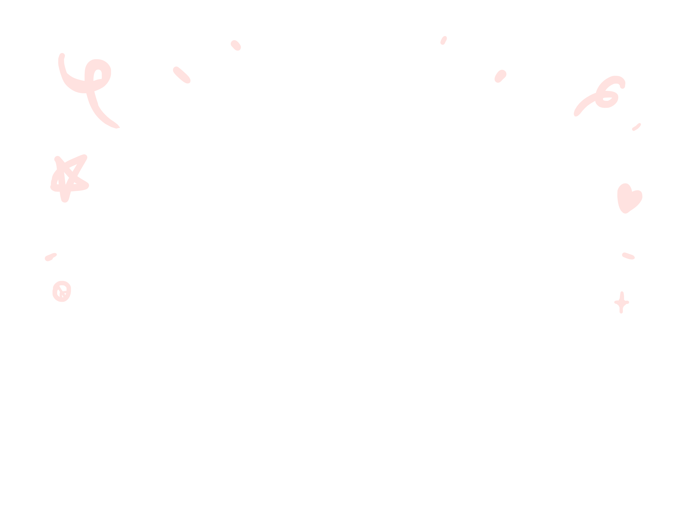
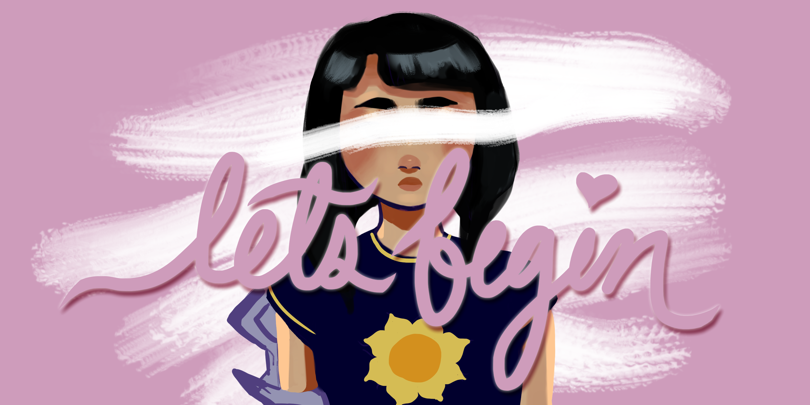
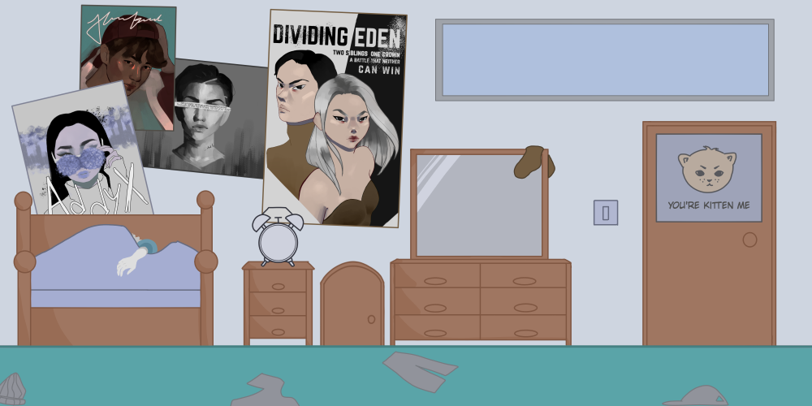
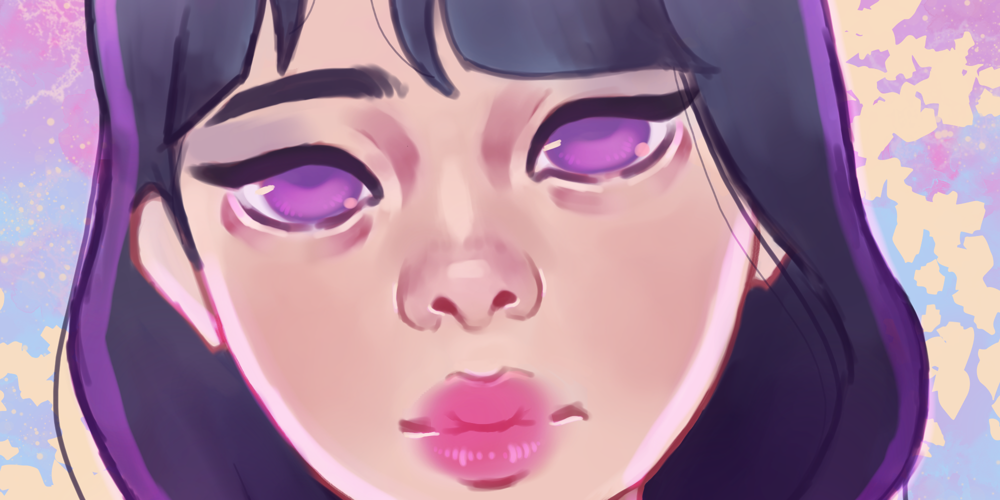
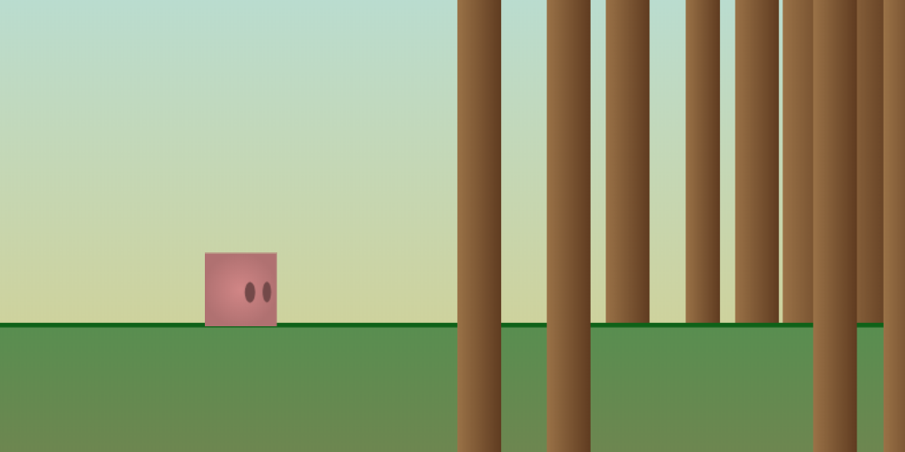
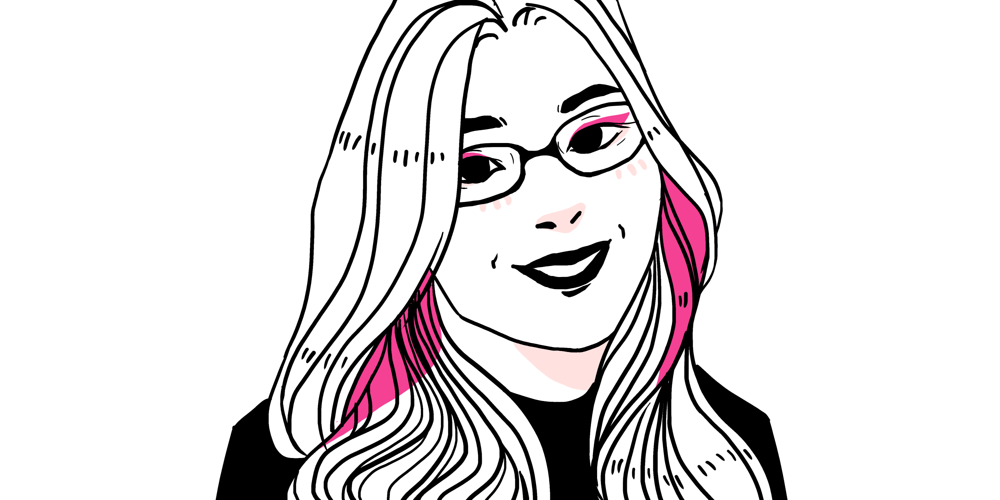

let's begin
in progress // a story game about coming out

I am an incoming first-year undergraduate student at Pacific Lutheran University with an intended major in Computer Science. I aim to become a software engineer in hopes of empowering students from underrepresented and underserved communities to explore STEAM and college access opportunities.
I recently graduated in the top 5% in the class of 2020 at Kent-Meridian High School and as an International Baccalaureate diploma recipient. This summer, I participated in the Google Computer Science Summer Institute program. Last summer, I was a student in the Girls Who Code Summer Immersion Program at F5 Networks. Currently, I am searching for technology enrichment programs and internships for summer 2021.
In my free time, I enjoy doodling, making games, creating art and comics and reading young adult novels. My current random hobby is learning piano on a phone app.

in progress // a story game about coming out

gwc final project // a cat game about being a friend

a digital illustration of a purple-eyed girl

a platformer game through the woods

a personal website to display coding and artistic projects

google cssi final project // game inspired by monument valley